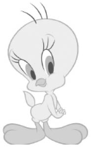

3. BÖLÜM
BEBEKSİ GÖRÜNÜM, ÖNYARGILAR VE KLİŞELER
İlk Sözsüz Mesaj
Ana rahmine düştükten sonra cenin hızla gelişmeye başlar. Şaşılacak kadar hızlı bir gelişmedir bu. Bir hücre olarak başlayan hayat kalp atışlarıyla kendisini gösterir ve müthiş bir hızla büyür. İnsan yavrusu için söylemek gerekirse yaklaşık dokuz ay on gün sonra başlangıçtaki ağırlığını milyonlarca kez katlayarak dünyaya gelir.
Anne karnındaki cenin beşinci aydan itibaren oldukça olgunlaşır. Gece annesi, kendisini rahatsız edecek bir pozisyonda yatsa, derhal içeriden tekmeler atar ve annesinin pozisyonunu değiştirmesini sağlar. Anne uzun süre hareketsiz kaldığında ise, cenin bunu tehlike olarak algılar. Annesi yaşamıyor olabilir! Bunu öğrenmek için yine içeriden tekmeler atar, anne can acısıyla hareket eder, cenin annenin yaşadığına emin olunca rahatlar ve uyur.33 Eşim oğluma hamileyken, karnına elimi koyduğumda, oğlumun da sıcaklığı hissettiğini, o noktaya içeriden bastırarak karşılık verdiğini fark ettim. Sonra belli noktalara elimle hafifçe baskı yaptığımda onun da o noktaya elleri ya da ayaklarıyla bastırdığını gördüm. Oğlum resmen benimle dokunarak iletişim kuruyordu. Anlattıklarımı bilhassa anneler çok iyi anlayacaklardır. Anneler her zaman için karınlarındaki bebeğin yaşayıp yaşamadığı konusunda endişelidirler ve bu anlattığım yöntemle sık sık kontrol ederler. Bunlar hayatın ilk evrelerinde gösterilen son derece net sözsüz mesajlardır.
Hamilelik sürecinin sonunda bebek dünyaya gelir. Evrim sayesinde milyonlarca yıl içerisinde beyni o kadar gelişmiştir ki anne kolay kolay bebeğini tek başına dünyaya getiremez. Beyni, dolayısıyla başı çok büyüktür ve anne yardım almaksızın başını pelvis kemiklerinden geçiremez.
Aslında bir bebek, doğduğu ilk anda konuşmaya başlar.34 Daha ilk nefesi ciğerlerine almadan önce, son derece güçlü ve hayati bir mesaj yollar dünyaya. Gönderilen mesaj, doğanın belki de en ilkel ve en etkili mesajıdır.
Tüm canlıların bebekleri, doğduklarında korunmasız ve zayıftırlar. Bazıları doğar doğmaz yürümeye, hatta koşmaya başlar, bazıları ise insan yavrusu gibi tamamen çaresiz ve hareketsizdir. Bir bebeği doğumunun ardından kapının önüne koyduğunuzda, oradan bir santim bile hareket edemez. Sıcak ya da soğuk gibi doğa şartlarından; açlıktan ya da susuzluktan kısa süre içerisinde, ağlaya ağlaya ölür. İçiniz ezildi değil mi böyle söyleyince? Zaten işin sihri ya da mucizesi de tam burada yatıyor.
Doğada bazı şeyler, insanlarda ve hayvanlarda bazı hareketleri tetikler.35Örneğin daha çok kısa bir süre önce, su birikintisinde iribaş olarak dolaşan kurbağa, değişimini tamamlar tamamlamaz suda hareket eden küçük böcekleri avlamaya başlar. Avlanmazsa, hayatını sürdüremez ve ölür. Kimse ona nasıl avlayacağını öğretmez. Öte yandan hareketsiz böcekleri av olarak görmez ve avlamaz. Suda hareket eden küçük yapraklara ve dallara bile atlar. Hareket eden nesneler kurbağanın yaşam ortamında genel olarak böceklerdir ve onu harekete geçiren “anahtar uyarıcı”, hareketli cisimlerdir. Kurbağa dünyaya bu özelliğiyle gelir.
Belli anahtar uyarıcılar, tüm canlılarda belli davranışları tetikler. Eibl-Eibesfeldt, ünlü antropolog, buna “doğuştan tetikleme mekanizması36 adını vermektedir. Ona göre kur yapma ve kavga etme gibi birçok davranış kalıbı, bu mekanizmaya dayanmaktadır.
John Maeda Basitlik Kanunları adlı kitabında,37 basit makineleri tanımlarken bebeklerden bahseder. Bebeklerin, çoğu ebeveynini çılgına çevirecek ölçüde dikkat gerektirdiğini, buna karşın güzel büyük gözleriyle ebeveynine “Bana yardım et! Beni sev!” dercesine baktığında o an her şeyi unutturduğunu aktarır. Bu dayanılmaz sevimliliğin bebekler için bir koruma mekanizması olduğunun söylendiğini ve kendisinin de buna katıldığını belirtir: “Kırılganlık karmaşıklığı etkisiz hale getiren önemli bir güçtür, çünkü beraberinde merhameti de getirir.”
Bebekleri gören insanlarda bir merhamet duygusu uyanır. Herkes bebekleri sevmek ve onları kucaklayarak sarılmak ister. Yeni doğanın fiziksel özellikleri, yetişkin hayvanlarda ve insanlarda “annelik” duygusunu tetikleyen biyolojik bir sinyal oluşturur. Bu, tetiklemek olarak nitelendirilir, çünkü sinyalin genel olarak amacı ve etkisi bir dizi karmaşık bakım davranışlarını harekete geçirmektir.38 Tetikleyici son derece basit bir mekanizmayla çalışmaktadır. Öğrenilen bir davranış olmaktan çok doğuştan içimizde vardır. Tüm canlılarda, özellikle yavruları doğuştan itibaren bakım ve korumaya ihtiyaç duyan dişi türlerde, yavruları yetiştirmeye biyolojik bir yatkınlık vardır. Küçüğün bizzat kendisi bu tepkiyi ortaya çıkartır.
Küçüklük ya da bebeksi görünümün tetikleyici etkisi sadece insanlarda değil, hayvanlarda da geçerlidir. Doğuştan düşman olduklarını unutup kedi yavrularını emziren anne köpek haberleri sık sık televizyonlarda yer alır. Human Planet filminde,39 Amazon Nehri’nin doğusunda yaşayan Awa kadınlarının, evcilleştirdikleri maymunları kendi göğüsleriyle emzirerek besledikleri görülmektedir. Awa yerlileri, maymun eti yerler ve maymunları yemek için avlarlar. Ancak, anneleri ölünce yalnız kalan bebek maymunları Awa kadınları sahiplenir ve emzirirler. Kendileriyle yapılan söyleşide eğer onları emzirmezlerse, yavru maymunların öleceğini söylemektedirler. Yetişkin maymunları besin olarak kullanan ve hiç acımadan öldürüp yiyen yerli kadınlar, yavrular için neden üzülmektedir? Onları kendi yavruları olmayan, hatta insan olmayan yavruları emzirmeye hangi faktör sevk etmektedir?
Bebeksi görünümün belirgin işaretleri vardır:40 Tombul yanaklar; küçük yüze göre geniş, yüksek ve çıkık bir alın; emmek için küçük bir ağız; tombul bir vücut; vücuda göre büyük bir kafa ve kısa kollar ile bacaklar. 1950’lerin başlarında yapılan bir araştırmada,41 insan da dahil 53 değişik cins hayvanın küçüklük ve yetişkinlik halinin çizimleri evli ve bekâr annelere; kocalara; öğretim görevlilerine; çocuklu ve çocuksuz çiftlere; genç yetişkinlere; orta yaşlılara ve yaşlı kişilere kadar geniş bir yelpazedeki katılımcılara gösterilmiştir. Bu kişilerden iki resimden birini seçmeleri ve nedenini açıklamaları istenilmiştir. Araştırmadan ilginç sonuçlar elde edilmiştir. Kadınların neredeyse tamamı, evli olup olmaması fark etmeksizin bebek hayvanların resimlerini tercih etmişlerdir. Erkekler bebeklerin fotoğraflarına bu kadar fazla ilgi göstermeseler de, evli erkekler bekârlardan daha fazla bebek resimleriyle ilgilenmişlerdir. Eşleri ilk bebeğe hamile olan erkekler bebek çizimleriyle daha fazla ilgilenmişlerse de, en çok babalar bebek çizimlerini seçmişlerdir.
“Her şeyin küçüğü sevilir” cümlesi, günlük hayatta sık sık dile getirilir. Küçük olan her zaman için sevilir ve korunur. Bebeklere karşı kolay kolay canice suçlar işlenmez, işleyenler de genellikle ruh hastaları olarak kabul edilirler. Köpek ya da kedi yavruları tekmelenmez. Bir insan, köpek, leopar, ayı, kedi ya da aslanın arasında pek bir ortak yanları olduğu söylenemez, ama hepsinin yavruları birbirine benzer, en azından sevimlilik bakımından birbirinden farkları yoktur. İnsan ya da hayvan yavrusu, yetişkinlerinin küçük birer kopyası değil, sevimli birer versiyonudur. Bekçi köpekleri ne kadar saldırgan olsalar da bebeklere saldırmazlar, bununla ilgili birçok video paylaşım sitelerinde izlenebilir.
Bir de farklı taraftan bakalım. Eğer türlerin yavruları, küçük birer yetişkin formunda doğsalardı, bu yetişkinlerde doğuştan var olan annelik ya da babalık duygusuyla bebeği sahiplenme olayı ne kadar gerçekleşebilirdi acaba? Düşünün ki aynı size benzeyen küçük bir modeliniz dünyaya geldi. Benjamin Button filminde yaşlı doğan bebeği düşünün. O bebek de size sevimli gelir miydi? Yine aynı şekilde o bebeğe sarılmak ya da bakmak ister miydiniz? Peki, o sizin yavrunuz olmasaydı yine onu sever miydiniz? O garip küçüğe sarılır mıydınız? Büyük bir olasılıkla cevabınız hayır olacaktır.
Benjamin Button, filmde, yaşlı bir insan formunda doğan bir bebektir.42
Bebeklerin korunmasızlığına devam edelim. Hayvanların büyük çoğunluğunun ve insanların yeni doğanları az ya da çok zayıftır ve korunmaları gerekir. Tabiat bunun için anne ve baba sistemini geliştirmiştir. Anne ve baba, türlerinin devamının sağlanması için dünyaya getirdikleri yavrulara sahip çıkacaklar, kendi başlarına yaşayabilecekleri olgunluğa erişinceye kadar onlara bakarak büyüteceklerdir. Annelik ve babalık duygusu, bunun en önemli sebebidir. Bu duygunun tetiklenmesi de işte bu bebeksi görünüm özellikleri sayesinde olmaktadır.
Özellikle insan yavrusu için korunma çok önemlidir. Cenin anne karnında, hiçbir ihtiyacı için çaba harcamaksızın beslenir, korunur ve gelişimini sürdürür. Süre dolup da dünyaya geldiğinde ve kordonu kesildiğinde ilk şaşkınlığını yaşar. İlk nefesini alır, ciğerleri yanar. Artık bir sıvının içerisinde değildir ve vücuduna tuhaf, rahatsız eden bir bez parçası sarılmıştır. Annesine bağlı doğrudan yemek kaynağı kesilmiştir ve karnı acıkmıştır. Yeni doğan derhal bir şeyler yapmalıdır ama çok zayıftır. Örneğin maymun yavruları doğar doğmaz annelerine sarılabilir ama insan yavrusu bunu uzun bir süre başaramaz. Şempanze yavrusu, tıpkı bizim yavrularımız gibi bağırır çağırır ve annesi yardımına gider. Ancak şempanze yavrusu, doğduğu andan itibaren annesine sımsıkı sarılırken, bizimki yapamaz.43 Elinde ağlamak dışında, bakımını sağlayabilecek iki özellik vardır. Birincisi yukarıda anlatılan bebeksi özelliklerdir. Bu özellikleriyle annesinin sevgisini ve merhametini kazanır, korunmaya başlar. Diğer özelliği ise bakışlarıdır. Yeni doğan ilk gördüğü yüze odaklanır. Bebeğin en kolay gözlerini dikip bakabildiği görüntü, kendisine bakan bir çift gözdür. Bir kâğıda daire çizip içine iki tane nokta konursa bebek ona bile dikkat edecektir. Bebekler yeni doğduklarında ancak 20-30 cm’ye kadar bir mesafeyi net görebilir. Daha uzağı göremez. Bu da annesinin yüzüne bakmaya yetecek kadardır. Bebek, bakışlarıyla annesinin bakışlarını yakalayarak ilgisini çeker ve sahiplenmesini sağlar.
İpucu: Yapılan birçok deney, bilinen sevme, okşama, altını alma ve besleme gibi faaliyetlerin haricinde annelerin bebeklerini sol kollarına yatırdıklarını belirlemiştir. Yapılan birçok açıklama bunun gerçek sebebini ortaya koyamamıştır. Neticede en akla yatkın açıklama, bebeklerin ana rahminde annelerinin kalp seslerini dinlemeye alışkın oldukları ve bu korkunç dünyaya adım attıklarında, annenin kalp atışlarını dinlemenin bebekleri rahatlattığıdır. Bu açıklama üzerine çalışmalar derinleştirilmiştir. Hastanelerde yeni doğanlar üzerine yapılan çalışmalarda, yapay olarak kalp atışı sesi dinletilen bebeklerin, diğerlerine göre daha az ağladıkları ve aynı besinleri almalarına rağmen daha fazla kilo aldıkları tespit edilmiştir.
Bebeksi görünümün bebekleri daha şirin ve sevimli kıldığı ve onları gören kişilerde sevme, kucaklama ve koruma isteğini tetiklediğini belirtmiştim. Bu etkiden, çok geniş bir yelpazede yararlanılmaktadır. Bebeksi görünüm herhangi bir objeyi çekici, sevimli ve “satılabilir” yapar. Bebeksi görünümün en önemli karakteristiklerinden birisi tombul yanaklardır. Tombul yanakların bebeğin emmesine ya da başka herhangi bir işleve katkısı olduğu tespit edilememiştir. Bu nedenle, yanakların bu tip bir görünümünün yalnızca bebeksi görünümü oluşturmak olduğu değerlendirilebilir. Keza bir diğer dikkat çeken özellik, vücuda göre iri bir baş ve iri gözlerdir. Walt Disney, filmlerinde ve çizgi filmlerindeki karakterlerinde bu özellikleri en fazla kullanan şirketlerden biridir. Genellikle sevimli olması beklenen karakterler bu özelliklerle yaratılır. Bambi buna bir örnek olarak verilebilir. Tweety, iri kafası ve küçük sarı vücuduyla bir başka bebeksi kahramandır. İri gözleri de buna katkı sağlamaktadır. Mickey Mause ve dişisi Minnie de bu özelliklerle yaratılmışlardır ve bize çirkin fareler olarak asla görünmezler. Cem Yılmaz’ın Arog adlı filminin fragmanında “alien (yaratık)” olarak doğan bebeğine dikkat edin. Bir canavar da olsa, iri kafası ve iri gözleriyle babasına bakar ve tüm çirkinliğine rağmen onu cezp eder. Hemen hemen tüm oyuncak bebekler bu özelliklerle üretilir. Oyuncak hayvanlar bile iri gözlerle ve büyük bir kafayla üretilir ki satış garantisiyle piyasaya çıksın. Bebeksi özelliklere sahip oyuncaklar diğerlerine göre daha çok alıcı bulur. Küçük olan şeyler insanlara her zaman için daha çekici gelir.
Bebeksi görünümün insana kattığı bir diğer özellik, başkalarının gözünde bebeksi görünüme sahip olanların daha dürüst görünmesidir. Bebekler kırılgan, hassas, naiftir ve yaşı büyük olanlara göre daha bağımlıdırlar.44İnsanların bunu algılamaları ve bu sayede bebekleri koruyarak bakmaları beklenir. Bununla beraber, bu süreç bebeklerin kendilerinden çok biçimsel özellikleriyle tetiklendiğinden, eğer bu özellikler bebek haricinde birisi ya da bir şeyde görüldüğünde (örneğin yetişkinler) aynı süreç gerçekleşir. Bilindiği üzere, bazı insanlar “bebek yüzlü” olarak nitelendirilirler. Yaşlarının ilerlemesine rağmen yüz karakteristikleri fazla değişmez, hep çocuksu bir halleri kalır. Bu fenomen, bebek yüz etkisinin aşırı genellemesi olarak adlandırılır.45 Yetişkinlerde bebeksi yüz ifadelerinin bulunmasına biyolojide “neoteni”46adı verilmektedir. Bebek yüz, minyon tabir edilen insan tipiyle aynı şeyi ifade etmemektedir. Bedeni ve yüzü ufak tefek olup yaşlılık belirtileri göstermese de, yüzü yetişkin özellikleri gösteren insanlara minyon denir. Bebek yüzler ise; vücudu iri olsa da yüzünde bebeksi özellikler taşıyan kişidir.

Tweety, bebeksi özelliklerin tamamını taşımaktadır ve bu onu son derece sevimli kılar.
Bebek yüz etkisiyle uyumlu olarak, araştırmalara göre bebeklerin yüz karakteristiklerinin görüldüğü yetişkinlere, bebeklerinkine benzeyen özellikler yakıştırılmaktadır.47Örneğin bebeksi yüzlü yetişkinler, olgun görünümlü kişilere göre sosyal ve entelektüel konularda daha zayıf olarak algılanmaktadırlar. Ayrıca daha sıcak, daha yakın, daha kolay anlaşılır, daha nazik olarak nitelenmektedirler. Yine bebek yüzlülerin kolayca kandırılabilen, yetersiz ve hata yapmaya meyilli oldukları değerlendirilir.
Bebek yüz klişesiyle günlük hayatta sıkça karşılaşırız. Klişenin kişiler arası ilişkiler, iş ve terfi fırsatları ve mahkemelerde suçlanma ve ceza alma gibi konularda önemli sosyal sonuçları vardır. Yüzleri bebeksi ve çekici olan insanlar daha dürüst olarak nitelendirilirken yine çekici ama olgun görünümlü ve bebeksi özellikler taşımayan insanlar daha az dürüst olarak nitelendirilmektedirler. Bazı insanlar hakkında konuşulurken “İyiliği yüzüne vurmuş...” denilirken, bazı insanlar için ise tam tersi düşünülür. Buna karşılık insanların bu tiplere yaklaşımı da enteresandır. Yapay bir mahkeme ortamı yaratılarak yapılan araştırmalarda; jürilerin bebek yüzlü olan kişilere karşı daha anlayışlı yaklaştıkları ve daha çok ihmalle suçladıkları; aynı jüri üyelerinin olgun görünümlü kişileri kasıtlı suç işlemekle itham ettikleri ve cezalandırma yönünde hareket ettikleri ortaya çıkmıştır. Yani insanlar, bebek yüzlülerin suç işleyeceğine inanmamaktadır. Bununla beraber Amerikalı Ted Bundy adlı seri katilin de bir bebek yüzlü olduğu unutulmaktadır. Yine bir Amerikan seri katili anlatan “Dexter” dizisini ilginç yapan en önemli özellik, dizinin anti-kahramanı olan Dexter Morgan’ın polis departmanında çalışmasıyla birlikte bebeksi yüz özellikleri taşımasıdır. Normal zamanlarda şefkatli bir baba iken, acımadan adam öldürmesi ve öldürme biçimleri şaşkınlık yaratmakta ve dizinin izlenirliğini artırmaktadır.
Bebek yüzlü bir adam.
Bebek yüzlü katil Ted Bundy.
Ayrıca, bir diğer önemli sonuç da askerlikle ilgilidir. İnsanların kafalarında Rambo tarzı Amerikan filmlerinin de yardımıyla, iyi ya da kahraman asker tipi vardır. Bu tip, esas olarak erkeksi yüz hatlarına sahiptir. Bebek yüzlü askerlerden cesur olmaları beklenmemektedir ve bebek yüzlü olan ve olmayan iki asker aynı anda kahramanlık gösterdiğinde, bebek yüzlü olanın ödül ya da madalya alması daha olasıdır.48
Bebek yüzlü insanların çok kibar ve terbiyeli insanlar oldukları değerlendirilir. Bu tür kişiler örneğin küfürlü konuştuklarında, içki ya da sigara içtiklerinde yadırganır; ahlaksız işler ya da böyle değerlendirilen faaliyetler içerisinde bulunmaları ayıp karşılanır.
Sonuç olarak bebeksi karakteristik özellikler türlerin devamını sağladığı gibi; aynı özellikler birtakım klişeler meydana getirir ve bu önyargıların etkilerine günlük hayatta sıkça rastlanır.
Damgalanma
Bebeksi özellikleri anlatırken, konuyla bire bir bağlantılı olarak damgalanma konusundan bahsetmeden geçemeyeceğim. Bu konu anne ve yavrusunun sözsüz işaret ve davranışlarının birbirlerini nasıl etkilediğini farklı bir bakış açısıyla incelerken, günlük hayatta rastladığımız anne baba ve çocukların normal ve normal dışı davranışlarına da bir ışık tutacağı düşüncesindeyim.
Öncelikle bir hayvanın “damgalanması” kavramından, onun canlı ya da cansız bir nesneye olumlu bir şekilde bağlanmasını anlamamız gerekir.49Kısa bir süre içerisinde gerçekleşen bu sürecin geriye döndürülmesi neredeyse imkânsızdır. Aynı süreç insanlarda anneye, eşe ve çocuğa bağlanma şeklinde gerçekleşir.
Hayvanlarda damgalanma konusu için civcivlerden örnek verilebilir.50Tavuk ve ördek yavruları için doğar doğmaz annelerini tanımaları esastır. Aksi halde birbirlerini kaybetmeleri ve yaşamlarını herhangi bir hayvanın dişleri arasında sona erdirmeleri pekâlâ mümkündür. Civcivler yumurtadan çıkar çıkmaz, gördükleri ilk büyük ve hareketli nesne, onlar için “ana” figürüdür. Normal şartlar altında bu nesnenin gerçek anneleri olması beklenirken, deneysel koşullarda karşılarına çıkan büyük ve turuncu balon da “anne” olarak kabul görecektir. Normalde annelerinin peşine takılıp gitmesi gereken civcivler bu durumda hareket eden balonun arkasından gideceklerdir. Daha da ilginci, birkaç gün sonra anneleri ve balon arasında seçim yapmak zorunda bırakıldıklarında, balonu tercih edeceklerdir.
Damgalanma, herhangi bir öğrenme biçimi değil, etkisinde kalarak öğrenme şeklidir. Damgalanma ayrıca hayvanın ileride çiftleşeceği türü de öğrenmesini sağlar. Uygulamada damgalanma için geçerli süre, doğumdan sonraki birkaç gündür. Eğer hayvanlar bu süre içerisinde damgalanmamışlarsa geç kalınır. O zaman civcivler hareketli nesnelerden korkmaya başlarlar. Diğer yandan hayvanat bahçesinde doğmuş ve hep insanlarla kaynaşmış olan hayvanlarda da tuhaflıklar görülür. Bu tür hayvanlar kendi cinslerine yaklaşmaktan çok, bakıcılarına cilve yaparlar. Bakıcılarına, yani insanlara, cinsel partner olarak yaklaşırlar. Yeni doğduğunda eve alınan köpek yavrularının, ileride sahiplerinin bacaklarına dolanarak çiftleşme benzeri hareketler yapmaları da aynı sebepten dolayıdır. Buna da “ters damgalanma” adı verilmektedir.
İnsan yavrusunda da damgalanma, benzer bir süreçte gerçekleşir. Doğumu takip eden aylarda, anne ve bebeği, karşılıklı gülümsemelere başlar. Bebeksi özelliklere ilave olarak gülümseme anneye çekici gelir ve yavrusunun yanında kalarak ona bakar ve büyütür. Aynı şekilde annesinin gülümsemesini tanıyan bebek de annesine bağlanır ve bu tüm bir hayat boyunca sürecek olan bir bağlılığın başlangıcıdır. İnsanlardaki “damgalanma”, yani anneye ve çocuğuna bağlanma bu şekilde olur. Limbik sistem konusunda da açıkladığım üzere, doğar doğmaz yetiştirme yurduna verilerek orada büyütülen çocuklarda ömür boyu huzursuzluklar meydana gelir. Bu tür çocuklar bir türlü bağlanamazlar; ya saldırgan ya da içine kapanık bir ruh hali geliştirirler.
İlk görüşte aşk da bir çeşit damgalanmadır.51Ergenlik dönemimizde âşık olmaya eğilimimiz artar ve çabuk âşık oluruz. Çoğunlukla da ilk aşka damgalanırız. Ancak modern toplumlarda evlenme yaşı ebeveynler tarafından geciktirildiği için ilk aşkımızla evlenmeyiz. Birçok kişi ilk aşkının etkisinden ömür boyu kurtulamaz ve evlenme vakti geldiğinde, evleneceği kadında ilk aşkına benzer özellikler arar. Evliliklerin başarısızlığında bu da bir etken olarak ortaya çıkabilir.
Şimdi belirteceğim konuya özellikle dikkatinizi çekmek istiyorum. İnsanlar anne babalarına damgalanırken, bu aynı zamanda ileride birlikte yaşayacağı ve çoğalacağı türü de anlamasını sağlar. Ancak bu bağlanma ileride kuracağı ilişkiler üzerinde son derece etkili olacaktır. Sağlıksız bir bağlanma olayında, ilerleyen zamanlarda erkekler kadınlarda hep annelerini, kadınlar da babalarını ve onların özelliklerini arayacaklardır. Bu karşı taraf için can sıkıcı bir deneyim olacağı gibi, ilişkilerin de sağlıklı yürümemesine neden olacaktır. Bu nedenle bağlanma olayını çocuk yetiştirirken çok dikkatle ele almalı ve çocuklarımızı kendimize gereğinden fazla bağımlı hale getirmekten kaçınmalıyız.
İnsanlarda ters damgalanma konusu çok geniş ve bu kitabın konusuyla fazla ilişkili değil. Çok enteresan bir konu ve ilgilenmek isteyenler için Desmond Morris’in İnsanat Bahçesi adlı kitabını şiddetle tavsiye ederim. Ancak bebeksi özelliklerle ilgili olarak yazarın anlattığı bir konuyu da aktarmadan geçemeyeceğim.
İnsan yavrusunun bebeksi özelliklerini yukarıda belirttim: İnsan yavrusu zavallı; yuvarlak; sıcak; basık yüzlü; gözleri çok büyük ve ağlayan bir canlıdır. Aynı özelliklerin hayvan yavrularında da var olduğunu yine anlatmıştım. İşte bu özellikleri fazlasıyla taşıyan bir hayvan yavrusu da insanlara çok cazip gelebilir ve insanlar tarafından evlat edinilebilir. Bu her iki taraf için de bir nevi ters damgalanmadır. Özellikle çocukları olmayanlar ya da bekâr insanlar tarafından bu yavru gerçek bebeğin yerine konulur. Artık o hayvan yavrusu (şehir hayatında köpek, kedi, kuş gibi hayvanlara bu anlamda sık rastlarız) sahibi için kendi yavrusu; hayvan için de sahibi, annesi yerine geçer. Ters damgalanmanın etkisi hayvana aşırı düşkünlük şeklinde ortaya çıkar. Bu, başka insanlara tuhaf gelir. O hayvanlar için harcadıkları insanüstü çaba eleştirilir. Hayvanlara yardım etmek yerine muhtaç insanlara yardım etmesi önerilir. Bilinmeyen nokta, o insan için o hayvanın, kendi çocuğundan hiçbir farkı olmadığıdır. Bu hayvanlar kucakta taşınır, her yere götürülür, insan gibi kıyafet giydirilir. “Pamuk, annene gel yavrum!” şeklindeki hitap tarzları da bu eğilimin en üst düzey göstergesidir. Hayvan ölünce yas tutulur. İnsan gibi gömülür. Bu gibi etkiler ters damgalanmada sıkça görülür. Burada anlatmak istediğim, hayvanlarıyla ters damgalanan insanların ya da hayvanlarına çok bağlanan kişilerin hastalıklı bir ruh haline sahip oldukları gibi bir şey değildir. Burada anlatılmak istenilen, bu tür bir bağlanmanın psikolojik kökenleridir.
Burada en büyük problem, hayvanların çok hızlı bir şekilde büyümesi ve bebeksi özelliklerini yitirmesidir. Bu nedenle insanoğlu tuhaf çiftleştirmeler ve ayıklamalarla çocuksu hayvanlara ulaşmıştır. Köpeklerin hepsi kurt soyundan gelir. İri hayvanlardır ve çok çabuk büyüyerek bebeksi özelliklerini kaybetmektedirler. Bunun sonucunda hayvan ele avuca sığmayarak bebek halinden çıkar. İnsanoğlu, buna da bir çözüm bulmuştur. Çok uzun yıllardır yapılan çalışmalarla ve özel çiftleştirmelerle bazı köpeklerin kurt özellikleri ortadan kalkmış, yerini kalıcı bebeksi özellikler almıştır. Bunlara kucak köpeği denilir ve bebeksi özellikleriyle yaklaşık 10-12 yıl yaşarlar. Bu süre insan yavrusunun çocukluk süresine eşittir. Pekinuva, terier gibi minyatür köpeklerin büyümesi oldukça yavaştır. Pekinuva köpeğinin yetişkin hali bir insan yavrusu kadardır (3,5 kg). Suratı bebekleri andırır, bacakları kısacıktır. Göğüskafeslerinin daraltılmasıyla seslerinin bile çocuksu kalması sağlanmıştır. Böylece bu tür köpekler, hayatları boyunca çantada bir bebek gibi taşınabilir.
Pekinuva köpeği ve bebeksi özellikler.
Bu tür köpekleri olan insanlar o kadar çok zaman geçirirler ve bağlanırlar ki, köpeklerinin ölmesi onlar için çocuklarının ölmesi gibidir. Onlara yanı başlarında mezar yaptırırlar ve gerçek anlamda yas tutarlar.52
Seren Serengil ve köpekleri.
Sonuç olarak damgalanma, insanlarda ve hayvanlarda etkisini bir ömür boyu sürdürecek bir yaklaşımdır. Damgalanma ve ters damgalanmanın anlaşılması, beraberinde birçok davranışın daha anlaşılmasını sağlayacaktır.
Diğer Yüz Klişeleri
İnsanların, çevrelerindeki kişilerin görünümleriyle ilgili pek çok önyargıları vardır. Özellikle yaşlı insanların bu tür önyargıları çoktur ve günlük hayatta çok sık karşılaşılır. Çok uzun boylu insanların daha yavaş düşündükleri; bacak boyu vücuduna göre fazla kısa olan kişilerin çok cin fikirli ve sürekli kötülük peşinde oldukları önyargısı gibi pek çok örnek verilebilir.
İnsanlar uzun yıllardan beri, yüzün karakter ve kişilikle ilgili birçok bilgiyi açığa çıkardığına inanmaktadır. Buna batıda fizyonomi53 adı verilirken, geleneksel kültür içerisinde firaset adıyla kullanılmıştır.54Fizyonomi, Büyük Türkçe Sözlük’e göre “Yüz çizgilerinin genel durumundan çıkan anlam” demektir. Firaset ise, “Terim anlamıyla, kişinin dış görünüşünden (fizyonomi) ahlaki durumunu anlamaya yarayan birtakım işaretlerle ilgilenen bilgi dalına verilen isimdir. Fizyonominin temelleri Antik Yunan’da Hipokrat ve Aristo’ya kadar dayanmaktadır.
“Ölmüş insanın yüz şeklini tasvir edişi, bugün de doktorlar tarafından Hipokrat maskesi olarak kullanılan Hipokrat’ın bu yöntemle hastalarına teşhis koyduğu, Aristo’nun ‘De Natura Animalium’ isimli çalışmasında beden ve yüz yapısı ile insanın karakter özellikleri arasında bağlantı kurmaya çalıştığı, 15. ve 16. yüzyıllardan itibaren bu yöntemin kişilerin karakter özelliklerinin belirlenmesinde sıkı bir şekilde kullanılarak, doktorlar, din görevlileri, filozof ve hâkimlerin başvurdukları bir yöntem olduğu ve büyük toplumsal ilgi gördüğü; 17. yüzyılda engizisyon mahkemelerinin yüz ve beden yapısına göre ‘gerçekliği’ tespit etmeye çalıştıkları da bilinen bir gerçektir.”55
Aristo’nun yüz klişeleri arasında sayılabilecek ve bir kısmı insan ile hayvan davranışlarını kıyaslayarak ortaya çıkmış olan bazı tespitleri günümüzde kulağa son derece mantıksız gelse de, o zaman için inanılmış ve başkalarına öğretilmiştir. Bunların bazıları şöyle sıralanabilir:56
Fizyonominin en önemli destekçisi, İsveçli fizyonomist ve din adamı J. C. Lavater’dir. Lavater’in kitabı (1783) döneminde çok popüler olmuş ve çeşitli dillerde bir düzineden fazla baskı yapmıştır.
Doğu’da ise Erzurumlu İbrahim Hakkı Efendi’nin Marifetname57 isimli kitabı örnek olarak verilebilir. 18. yüzyılın önemli mutasavvıf ve bilim insanlarından biri olan Erzurumlu İbrahim Hakkı, Marifetname adlı eserinde fizyonomi, geleneksel kültür içerisindeki adıyla firasete dair önemli bilgiler ortaya koymuştur:
“İbrahim Hakkı’ya göre hikmet ehli olanlar beden ve kişilik ilişkileri üzerine şunları söylemişlerdir: ‘Boyu uzun olan güzel ve sade dil olur; boyu kısa olanın hilesi çoktur; saçı sert olan akıllı ve atılgan olur; saçı yumuşak olan budala ve arsız olur; saçı kara olan sabırlıdır; saçı az olan bilgili ve nazik olur; başı küçük olanın aklı azdır; başı büyük olanın aklı çok olur; kulağı uzun olan cahil ve tembeldir; küçük kulaklı olan uğursuz, orta olan doğrudur; siyah gözlü olan itaatli, gök gözlü olan zeki, ela gözlü olan edip olur; burnu uzun olanın anlayışı kıttır, burnu kısa olan korkak olur.’ ”58
Yukarıda anlatılan, bilimsellikten uzak klişe tabir edilebilecek olan yargılar bizleri bir noktaya götürür: İnsanlar yüzyıllar boyunca içinde bulundukları belirsizlik ortamında tutunacak belirgin bir şeyler istemişlerdir. Bu nedenle günlük yaşamda zihinlerindeki belirsizliği azaltmak ve hayat üzerinde bir nevi kontrol sağlamak için fizyonomiye tutunmuşlar ve bu düzmece prensiplere inanma ihtiyacı duymuşlardır. Klişe bir kez insan zihninde oluştuktan sonra hatırlanan her ayrıntı bu prensibi güçlendirir. (Beni soyan adamın tıpkı bir suçlu gibi kalın kaşları vardı!) Her uyuşmayan ayrıntı ise (seri katil Ted Bundy’nin bebek yüzlü olması gibi) göz ardı edilir.
33 Molcho, S. (2007). Çocuk Beden Dili. İstanbul: Delta Yayınları, 20.
34 Lewis, D. (1978). The body language of children. USA: Souvenir Press, 48.
35 Eibl-Eibesfeldt, I (1971). Love and hate. The natural history of behavior patterns. New York: Holt, Rinehart and Winston, 20.
36 İngilizcesi: “Innate releasing mechanism (IRM).”
37 Maeda, J. (2011). Tasarım, Teknoloji, İş ve Yaşamda Başarı İçin Basitlik Kanunları. Çeviri: A. K. Bakkal. İstanbul: Media Cat Kitapları, 24.
38 Lewis, D. (1978). age., 49.
39 Jones, T. H., (2011). Human planet-Jungles-People of the trees. BBC/Discovery Channel France Television Co-Production, 15. dakika.
40 Eibl-Eibesfeldt, I (1971). age., 21.
41 Lewis, D. (1978). age., 50.
42 Fincher, D. (2008). The curious case of Benjamin Button. Hollywood filmi. Filmde Benjamin Button, yaşlı bir insan formunda dünyaya gelir ve terk edilir. Huzurevi bakıcısının elinde büyüyen Benjamin, aylar ve yıllar geçtikçe gençleşir ve en sonunda bir sperm parçasına dönüşerek ölür.
43 Morris, D. (1985). Çıplak Maymun. İstanbul: İnkılâp Kitabevi, 119.
44 Masip, J. vd. (2004). Facial appearance and impressions of credibility: The effects of facial babyishness and age on person perception. International Journal of Psychology, 2004, 39 (4), 276-289, 278.
45 Zebrowitz, L. A. (1997). Reading faces. Window to the soul? Boulder, CO: Westview Press ve Zebrowitz, L. A. vd. (2003). Trait impressions as overgeneralized responses to adaptively significant facial qualities: Evidence from connectionist modeling. Personality and Social Psychology Review, 7, 194-215.
46 İngilizcesi: “Neoteny.”
47 Masip, J. vd. (2004), age., 279.
48 Knapp, M. Hall, J. A. (2006). Nonverbal communication in human interaction. 6. baskı. Kanada: Wadsworth, 187.
49 Morris, D. (2008). İnsanat Bahçesi. Orijinal adı: The Human Zoo. İlk basım: 1985. Çev. Nuran Yavuz. İstanbul: İnkılâp Kitabevi, 171.
50 Morris, D. (2008). age., 172.
51 Morris, D. (2008). age., 179.
52 Bkz. http://www.pressturk.com/magazin/haber/35/tinye-mezar-yaptiracak.html adresinde Seren Serengil’in, Tiny (ufaklık) adını verdiği ve yanından hiç ayırmadığı köpeğinin ölmesi üzerine yaşadığı üzüntü anlatılmaktadır: “Daha önce Tiny’nin ölmesinden korktuğunu her fırsatta söyleyen ünlü sanatçı, üzüntüsünü şu sözlerle dile getirdi: ‘Babamı kaybettiğimde, evlendiğimde, tatillerde Tiny hep yanımdaydı. O benim çocuğum gibiydi. Şimdi bu evde nasıl o olmadan kalacağım... Onu gömmek ne büyük acı...’ ”
53 İngilizcesi: “Physiognomy.”
54 Çonoğlu, S. (2011). “Cumhuriyet Devri Türk Romanında Beden Yapısı, Bedensel Davranışlar ve Kişilik İlişkileri Üzerine Bir Çözümleme.” Turkish Studies - International Periodical For The Languages, Literature and History of Turkish or Turkic Volume 6/4 Fall 2011, p. 475-496, TURKEY. http://turkoloji.cu.edu.tr/YENI%20TURK%20EDEBIYATI/sc_cumhuriyet_roman/sc_cumhuriyet_roman.htm#bookmark0 web sayfasından 28.01.2012 tarihinde erişilmiştir.
55 Çonoğlu, S. (2011). age.
56 Erdem, O. (2010). Yüz Okuma. İstanbul: Yakamoz Yayınları, 93.
57 Erzurumlu İbrahim Hakkı (2001). Marifetname (Çev. M. Fuat Başar), İstanbul: Âlem Yayıncılık.
58 Erzurumlu İbrahim Hakkı 2001’den aktaran Çonoğlu, 2011.